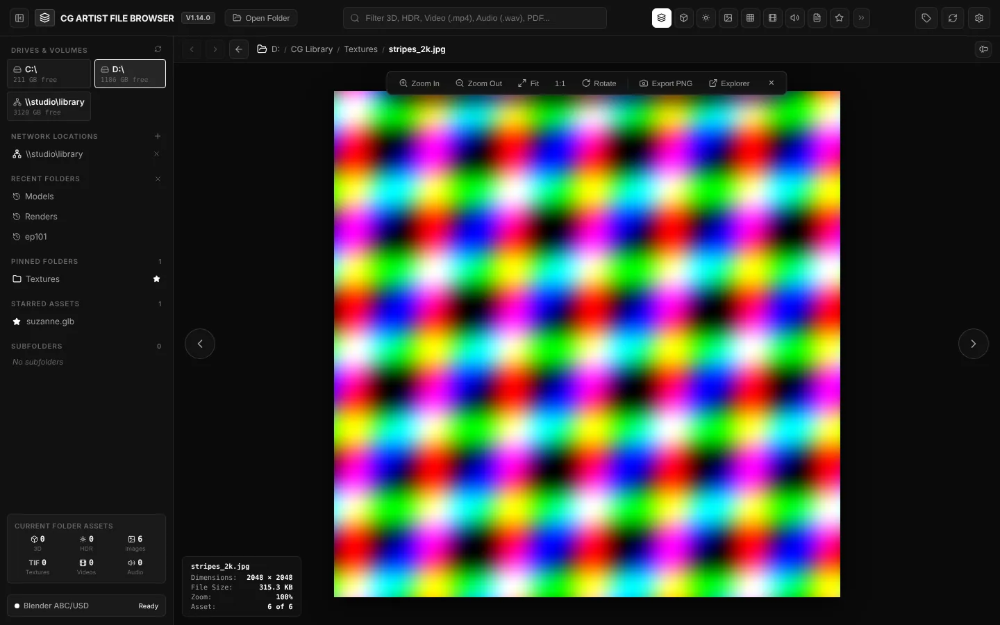

Deep dive
Images and textures
The image viewer for PNG, JPG, WebP, TIFF, TGA and other 2D files: zoom, pan, channel solo and metadata.
What opens here
PNG, JPG, JPEG, WebP, BMP, TIFF, TGA and DDS files open in the image viewer. Each card shows the format in its corner and a thumbnail. TIFF files with a planar layout are decoded as well as the common uncompressed and LZW kinds.

Moving around
- Zoom: mouse wheel, or the zoom buttons.
Zand drag zooms too,0resets the zoom, andCtrl+0fits the picture to the window. - Pan: hold the right mouse button and drag. The left button is reserved for selection.
- Next and previous: the arrow buttons, or the
LeftandRightarrow keys, step through the other pictures in the folder.Esccloses the viewer.
File information
The inspector (press I, see the inspector) shows the file type, size, resolution, colour, channels and sample type of the picture you have selected.
Texture sets
A material is often saved as several maps that share a base name, such as wood_basecolor.png, wood_normal.png and wood_roughness.png. The grid always shows every file. Choose View as texture set to group the maps of a material into one card. The app recognises the usual names for base colour, normal, roughness, metallic, height and ambient occlusion. If two files could be the same map (for example wood_normal.png and wood_normal.jpg), no set is offered, so nothing is grouped by mistake.
Found a mistake or something missing? Edit this page on GitHub.